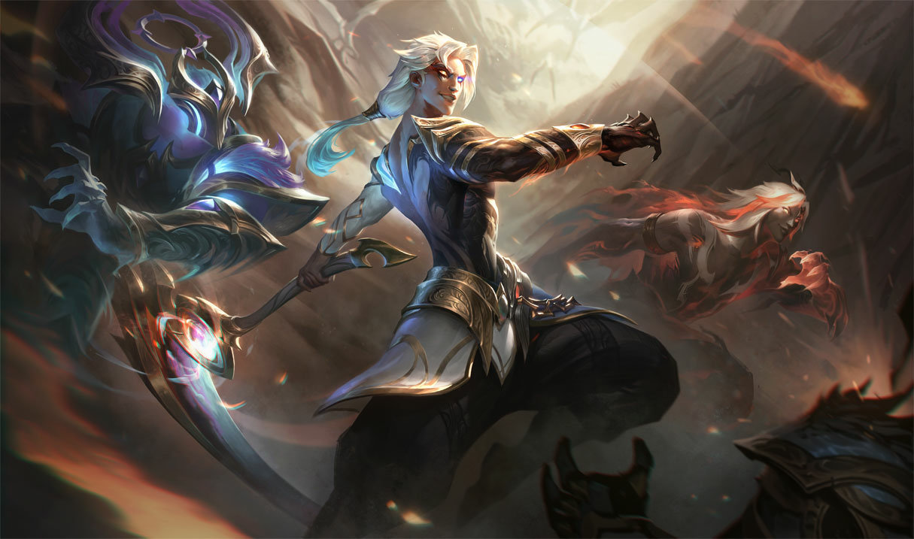
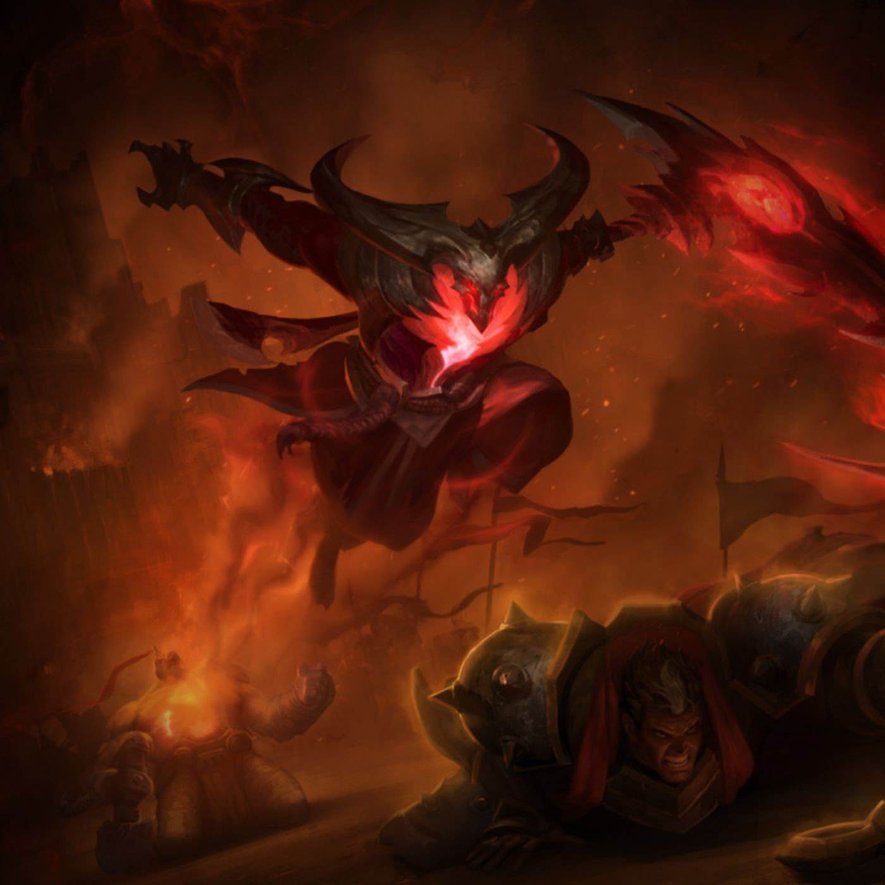

Kayn is a peerless practitioner of lethal shadow magic,
Shieda Kayn battles to achieve his true destiny-to one day lead the Order of Shadow into a new era of Ionian supremacy. He wields the sentient darkin weapon
Rhaast, undeterred by its creeping corruption of his body and mind. There are only two possible outcomes: either Kayn
bends the weapon to his will.... or the malevolent blade consumes him completely, paving the way for the destruction of all Runeterra.

This is Rhaast. Kayn became the Order’s greatest trainee, growing more arrogant all the while.
Years into his training, he was sent on a mission to retrieve a mystical Darkin weapon from his home, Noxus.
What he found was the legendary sycthe, Rhaast, a living weapon.
Instead of destroying the demonic blade, he grabbed it for himself.
The corruption of the weapon twisted his body and mind, melding the shadow and the Darkin together into one beast.